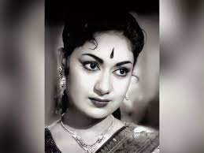

Mahanati Savithri
She was a legendary Indian film actress

Mahanati Savithri (1936-1981) was an Indian film actress known for her outstanding performances in Telugu, Tamil, Kannada, and Hindi films. She was regarded as one of the finest actresses in the Indian film industry and was the first female actor to receive the Rashtrapati Award.
Few lines about Mahanati Savithri
- Mahanati Savithri was an Indian film actress known for her outstanding performances in Telugu, Tamil, Kannada, and Hindi films.
- She was born on 6 December 1936, in Chirravuru, Guntur district, Andhra Pradesh, India.
- Her father, Nissankara Guravayya, was a well-known stage actor and her mother, Subhadramma, was a professional singer.
- She started her career as a child artist and made her debut as a lead actress in the Telugu film Pelli Chesi Choodu (1952).
- She acted in more than 300 films in a career spanning 30 years.
- She received the Rashtrapati Award for her outstanding contribution to Indian cinema in 1968, becoming the first female actor to receive the award.
- She was married to Gemini Ganesan, a prominent actor, and had two children with him.
- She was known for her versatility as an actor and her ability to portray a wide range of emotions.
- She was known for her roles in films such as Devadasu (1953), Thodi Kodallu (1957), Mayabazar (1957), and Gundamma Katha (1962).
- She was a recipient of numerous awards, including the Nandi Award and the Tamil Nadu State Film Award for Best Actress.
- She died on 26 December 1981, at the age of 45, due to liver cirrhosis.
- Summary:
Mahanati Savithri was a legendary Indian film actress known for her outstanding performances in Telugu, Tamil, Kannada, and Hindi films. She was regarded as one of the finest actresses in the Indian film industry and was the first female actor to receive the Rashtrapati Award.
“Acting is not what I do but what I am.”
-- Mahanati Savithri